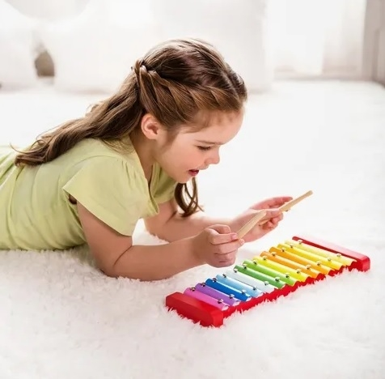

Banco de descarga con Xilofón
Banco de descarga con xilofón Se trata de un juguete ideal para estimular la percepción espacial y el oído musical de los peques, a la vez que entrena la coordinación mano-ojo y la motricidad fina. También es un excelente entretenimiento para desarrollar el pensamiento crítico y lógico. Funciona a través de un sistema de bolas que, al golpearlas con el martillo, caen sobre el xilófono produciendo una agradable sinfonía. Y, para que los niños lo sigan usando a medida que crecen, se puede voltear para utilizar el xilófono directamente.
